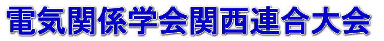

若手研究発表会
電気三学会は，令和6年より，従来形態の関西連合大会を発展させた若手研究発表会を開催しています。（同日同会場で各学会が開催しています。）
令和7年
令和6年
趣意書
現代生活において電気は様々な形で幅広く利用されており、今日の文明社会を維持発展させて行く上で、必要不可欠な社会的インフラストラクチャーの一部となっています。
電気技術は広範囲の学術分野に及んでおり、それらに関する研究成果は、各々の専門領域に基づいて設立された学会で分散して発表されて来ました。
そのような学会として電気学会、電子情報通信学会、映像情報メディア学会があります。
しかしながら、これらの学会で議論される学術的課題を、横断的に議論する共通の場が必ずしも備わっておりません。
このような状況にあって、関西に在住している研究者が一堂に会し、研究成果発表や情報交換が出来る場を提供することによって、関係分野の研究及び産学連携を活発化し、関西経済の発展につなげることが強く望まれるところであります。
そこで、電気関係各学会の関西支部に属する者が集まって実行委員会を組織し、この分野に関わっている研究者、技術者、教育者、学生の方々、さらには関心をお持ちの方々を広く募り、電気関係学会関西連合大会を実施することと致しました。
本大会では、参加者の研究発表・情報交換の場として学術発表および特別学術講演会等を実施する予定です。
これによって、この分野の研究の活性化を図り、本大会がこの分野における関西経済発展の起爆剤となることを目指します。
また、このような学術活動を通して若手研究者の育成を図ることによって、次世代へと繋ぐ社会的貢献を果たすことを目的と致します。
年次大会
令和5年 関西学院大学
- トップページはこちら
- 日程 令和5年11月25日(土) ～11月26日(日)
- 会場 関西学院大学 西宮上ヶ原キャンパス
令和4年 京都大学
- トップページはこちら
- 日程 令和4年11月26日(土) ～11月27日(日)
- 会場 京都大学 吉田キャンパス（オンライン開催）
令和3年 同志社大学
- トップページはこちら
- 日程 令和3年12月4日(土) ～12月5日(日)
- 会場 同志社大学 京田辺キャンパス（オンライン開催）
令和2年 立命館大学
- トップページはこちら
- 日程 令和2年11月14日(土)～11月15日(日)
- 会場 立命館大学 びわこ・くさつキャンパス
令和元年 大阪市立大学
- トップページはこちら
- 日程 令和元年11月30日(土)～12月1日(日)
- 会場 大阪市立大学 杉本キャンパス
平成30年 大阪工業大学
- トップページはこちら
- 日程 平成30年12月1日(土)～2日(日)
- 会場 大阪工業大学 大宮キャンパス
平成29年 近畿大学
- トップページはこちら
- 日程 平成29年11月25日(土)～26日(日)
- 会場 近畿大学 東大阪キャンパス
平成28年 大阪府立大学
- トップページはこちら
- 日程 平成28年11月22日(火)～23日(水・祝)
- 会場 大阪府立大学 中百舌鳥キャンパス
平成27年 摂南大学
- トップページはこちら
- 日程 平成27年11月14日(土)～15日(日)
- 会場 摂南大学 寝屋川キャンパス
平成26年 奈良先端科学技術大学院大学
- トップページはこちら
- 日程 平成26年11月23日(日)～24日(月:祝日)
- 会場 奈良先端科学技術大学院大学
平成25年 大阪電気通信大学
- トップページはこちら
- 日程 平成25年11月16日(土)～17日(日)
- 会場 大阪電気通信大学 寝屋川キャンパス
平成24年 関西大学
- トップページはこちら
- 日程 平成24年12月8日(土)～9日(日)
- 会場 関西大学 千里山キャンパス
平成23年 兵庫県立大学
- トップページはこちら
- 日程 平成23年10月29日(土)～30日(日)
- 会場 兵庫県立大学 姫路書写キャンパス
平成22年 立命館大学
- トップページはこちら
- 日程 平成22年11月13日(土)～14日(日)
- 会場 立命館大学 びわこ・くさつキャンパス
平成21年 大阪大学
平成20年 京都工芸繊維大学
平成19年 神戸大学
平成18年 大阪工業大学
- トップページはこちら
- 日程 平成18年11月25日(土)～26日(日)
- 会場 大阪工業大学 枚方キャンパス
平成17年 京都大学
- トップページはこちら
- 日程 平成17年11月12日(土)～13日(日)
- 会場 京都大学 桂キャンパスAクラスター・Bクラスター
平成16年 同志社大学
- 日程 平成16年11月28日(日)～29日(月)
- 会場 同志社大学 京田辺キャンパス
平成15年 大阪市立大学
日程 平成15年11月8日(土)～9日(日)
会場 大阪市立大学 杉本キャンパス
歴代各賞受賞者
関係学会へのリンク
(C) Kansai-section Joint Convention of Institutes of Electrical Engineering